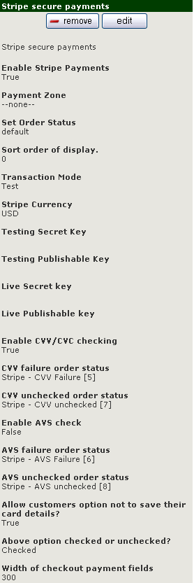

Stripe Payments Module for Zen Cart

|
If the module floats your boat then please feel free to send me some beer tokens. After currency conversions, PayPal fees & UK income tax I get around 70 - 75% of what you send. |
Installation |
|

Download and unzip the payment module package from the Zen Cart website and upload the files to your store. Now go to your admin > modules >payment and you should see an entry for Stripe: Let's run through the options as shown on the right. Enable Stripe Payments - fairly simple - True will display Stripe to your customers, false will disable it. Payment Zone - this is a standard Zen Cart setting and will allow you to restrict Stripe payments to zone(s) that you have setup in your store Set Order Status - will be attached to successful orders made using Stripe Transaction Mode - Test will allow you to setup the module to your satisfaction and a marker will appear in the store front end warning that the module is in test mode. Stripe Currency - set to USD or CAN - do make sure that (a) your store operates in teh same currency and (b) so does your Stripe account Keys - these are obtainable through your Stripe dashboard and should be copied from there and pasted here. Enable CVV/CVC Checking - this will default to True - if disabled then the CVV box will not be displayed in the front end. CVV failure order status - when you install the module it will add a new order status of Stripe - CVV Failure which will automatically be given to orders that have failed a CVV check - you can alter that here if you wish. (see Known Issues) CVV unchecked order status - sometimes a bank may not check a submitted CVV and Stripe will pass you back an 'unchecked' response - as with a CVV failure we have added a new order status in to flag this up for you - you can alter that here if you wish. (see Known Issues) Enable AVS Checking - if you enable AVS checking then the module will send your customer's address details to Stripe who will, in turn, run an AVS check with the customer's bank. The response from the bank will be notified back to you. (see Known Issues) Create a Customer Object at Stripe? - allows you to either just use Stripe as a straightforward card processor (false) or setup a Customer Object at Stripe (true). If set to false then Allow customers option not to save their card details? and Above option checked or unchecked? will both have no effect on teh front end. AVS failure order status - as with CVV checking we have added in a new order status for AVS failure which will automatically be assigned to failed checks - you can alter that if you wish (see Known Issues) AVS unchecked order status - as with the CVV check you may receive a response of unchecked for your AVS request - these orders will be flagged up with whichever status you select here - I have pre selected the new 'Stripe - AVS unchecked' one for you (see Known Issues) Allow customers option not to save their card details? - you can, if you wish, display an option for customers to choose not to save their card details at Stripe. (see Known Issues) Above option checked or unchecked? - if you want to allow the above then do you want the option pre-selected or not? Width of checkout payment fields - depending on the template that you are using you may find that the input fields for the card details can be poorly displayed - try changing this value until the display is as you like it. |